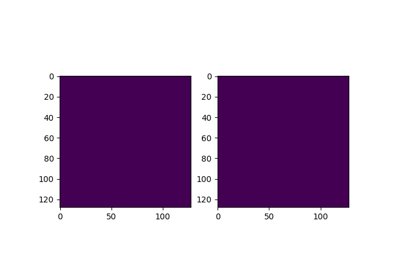

Using the DEAPI#
Below are a gallery of examples for controlling the DE server using the DEAPI.
Live Imaging Examples#
These examples demonstrate how to visualize the data as it is being acquired.

Viewing Sensor Data During Acquisition
Viewing Sensor Data During Acquisition
Setting up an Acquisition#
Below is a gallery of examples on how to set up an acquisition using the deapi.

Virtual Imaging#
These examples demonstrate how to do live virtual imaging in the deapi

Virtual Dark/Bright Field (VDF/VBF) Imaging
Virtual Dark/Bright Field (VDF/VBF) Imaging